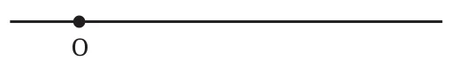
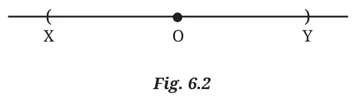
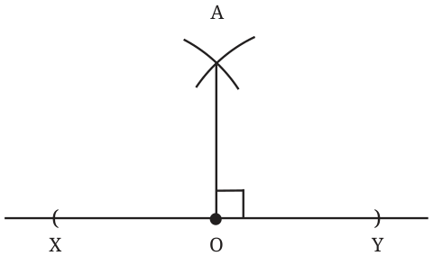

Can we extend the method of constructing the perpendicular bisector to construct a \(90^{\circ}\) angle at any point on a line? Draw a line and mark a point O on it. Construct a \(90^{\circ}\) angle at point O.
Find a segment of this line for which O is the midpoint.
Extend the line on either side of O.

Using a compass, mark two points X and Y at equal distance from O, so that O is the midpoint of XY.
The perpendicular bisector of XY will pass through O and is perpendicular to the given line.
In this case, do we need to draw two pairs of intersecting arcs to get the perpendicular bisector of XY?
No, we don’t. We already have one point, O, lying on the perpendicular bisector.
Figures 6.2 and 6.3 describe the steps to construct a \(90^{\circ}\) angle at a given point on a line.
